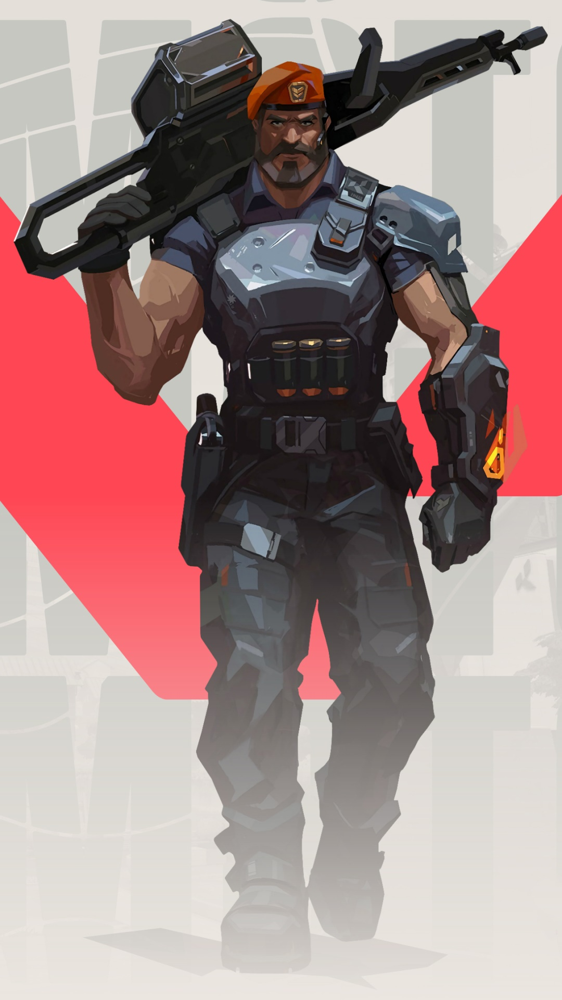

~~~~~~~~~~~~~~~~~~ Agentes ~~~~~~~~~~~~~~~~~~
Agora que sabemos as funções dos agentes dentro do jogo, vamos conhece-los:
Brimstone

Brimstone vem diretamento dos Estados Unidos.
Seu arsenal garante que seu esquadrão esteja sempre em vantagem. Sua capacidade de oferecer utilidade com precisão a distância faz dele um comandante inigualável na linha de frente.
Habilidades especiais de Brimstone
- Incendiário
- Fumaça celeste
- Sinalizador estimulante
- Ataque orbital
Phoenix

Phoenix vem diretamente da Inglaterra.
O poder estelar de Phoenix reluz em seu estilo de luta, incendiando o campo de batalha com luz e estilo. Tendo ajuda ou não, ele entra na luta como e quando achar que deve.
Habilidades especiais
- Bola curva
- Mãos quentes
- Labareda
- Renascimento
Sage

A Sage vem da China.
Traz segurança para si mesma e para a equipe aonde quer que vá. Capaz de reviver aliados e rechaçar investidas agressivas, ela oferece um centro de calmaria em meio ao caos da batalha.
Habilidades especiais
- Orbe de lentidão
- Orbe de curativo
- Orbe de barreira
- Ressurreição
Sova

Sova nasceu sob o eterno inverno das tundras russas.
Rastreia, encontra e elimina inimigos com eficiência e precisão implacáveis. Seu arco personalizado e suas habilidades inigualáveis de reconhecimento garantem que nenhuma presa escape.
Habilidades especiais
- Flecha de choque
- Flecha rastreadora
- Drone coruja
- Fúria do caçador
Viper

Viper é uma química estadunidense.
Emprega uma variedade de dispositivos químicos venenosos para controlar o campo de batalha e prejudicar a visão do inimigo. Se as toxinas não matarem a presa, seus jogos mentais certamente o farão.
Habilidades especiais
- Nuvem venenosa
- Cortina tóxica
- Veneno de cobra
- Poço peçonhento
Cypher

Cypher vem do Marrocos e é um vendedor de informações.
É uma verdadeira rede de vigilância de um homem só que fica de olho em cada movimento dos inimigos. Nenhum segredo está a salvo, nenhuma manobra passa despercebida. Cypher está sempre vigiando.
Habilidades especiais
- Jaula cibernética
- Câmera de vigilância
- Fio-armadilha
- Assalto neutral
Reyna

Reyna foi criada no coração do México.
Domina o combate individual, destacando-se a cada abate efetuado. Sua capacidade só é limitada por sua própria perícia, tornando-a bastante dependente de desempenho.
Habilidades especiais
- Devorar
- Dispensar
- Olhar voraz
- Imperatriz
Killjoy

Killjoy é uma alemã muito inteligente.
Defende o campo de batalha facilmente usando seu arsenal de invenções. Se o dano causado por seu equipamento não der cabo dos inimigos, os efeitos negativos de seus queridos robôs dão conta do recado.
Habilidades especiais
- Robô de alarme
- Torreta
- Nanoenxame
- Confinamento
Breach

Breach é um homem-biônico sueco.
Dispara poderosos jatos cinéticos para forçar a abertura de um caminho pelo território inimigo. O dano e a interrupção que ele causa garantem que nenhuma luta seja justa.
Habilidades especiais
- Estopim
- Falha tecnônica
- Pós-choque
- Onda trovejante
Omen

Omen é uma lembrança fantasmagórica que caça nas sombras.
Ele cega os inimigos, teleporta-se pelo campo e deixa a paranoia assumir o controle enquanto o adversário tenta descobrir de onde virá seu próximo ataque.
Habilidades especiais
- Paranoia
- Manto sombrio
- Passos tenebrosos
- Salto das sombras
Jett

Jett é uma sul coreana.
Representando sua terra natal, Jett tem um estilo de luta ágil e evasivo que permite que ela assuma riscos como ninguém. Corre em meio a qualquer confronto, cortando os inimigos antes mesmo que eles percebam quem ou o que os atingiu.
Habilidades especiais
- Corrente ascendente
- Brisa de impulso
- Erupção das brumas
- Tormenta de aço
Raze

Raze é uma brasileira com muito carisma e armas letais
Com seu estilo de jogo "porradeiro", ela é craque em desentocar inimigos entrincheirados e limpar espaços apertados com uma bela dose de BUUUM!
Habilidades especiais
- Carga de explosivos
- Cartusos de tinta
- Bumba
- Estraga-prazeres
Skye

Vinda diretamente da Austrália.
Skye e sua equipe de feras desbravam territórios hostis. Com seus poderes de cura e suas criações que partem pra cima dos inimigos, qualquer equipe ficará mais forte e mais segura tendo Skye como aliada.
Habilidades especiais
- Predador explosivo
- Luz desbravadora
- Reflorecer
- Rastreadores
Yoru

Yoru é nativo do Japão.
Abre fendas na realidade para infiltrar as linhas inimigas sem ser visto. Ele usa tanto artimanhas quanto táticas agressivas, e os alvos são abatidos sem saber de onde o ataque veio.
Habilidades especiais
- Ponto cego
- Passagem dimensional
- Distração
- Espionagem dimensional
Astra

Astra, é uma agente ganense.
Utiliza energias cósmicas para moldar o campo de batalha a seu bel-prazer. Com total domínio da sua forma astral e um talento estratégico nato, ela está sempre anos-luz à frente dos inimigos.
Habilidades especiais
- Pulso nova
- Nebulosa
- Poço gravitacionak
- Forma astral/ Divisa cósmica
KAY/O

KAY/O é uma máquina de guerra construída com um único propósito: neutralizar Radiantes.
Ele é capaz de suprimir habilidades inimigas, comprometendo a capacidade de contra-ataque dos adversários e dando a si próprio e a seus aliados uma vantagem essencial em combate.
Habilidades especiais
- Granada/ Clarão
- Ponto/Zero
- Frag/Mento
- Anular/CMD
Chamber

O criador de armas francês Chamber.
Bem vestido e armado até os dentes, coloca os inimigos para correr com uma precisão mortal. Use e abuse do arsenal personalizado dele para segurar posições e abater inimigos de longe, criando a defesa perfeita para qualquer plano.
Habilidades especiais
- Caçador de cabeças
- Rendezvous
- Marca registrada
- Tour de force
Neon

Neon, uma agente filipina.
vança em velocidades incríveis, descarregando surtos de radiância bioelétrica tão rapidamente quanto seu corpo consegue gerá-los. Ela corre à frente para pegar os inimigos de surpresa, abatendo-os mais rápido do que um raio.
Habilidades especiais
- Ricochete elétrico
- Equipamento voltaico
- Via expressa
- Sobrecarga
Fade

Fade, a caçadora de recompensas turca.
Usa o poder dos pesadelos para capturar os segredos dos inimigos. Personificando o próprio terror, ela persegue os alvos e revela seus medos mais profundos para, depois, destruí-los na escuridão.
Habilidades especiais
- Clausura
- Assombrar
- Espreitador
- Véu da noite
Harbor

Harbor, vem do litoral indiano.
Entra em campo com a força da tormenta, empunhando tecnologia ancestral com domínio sobre a água. Ele libera corredeiras espumantes e ondas esmagadoras para proteger seus aliados e atacar aqueles que se opõem a ele.
Habilidades especiais
- Enseada
- Maré alta
- Cascata
- Acerto de contas
Gekko

Gekko, vem diretamente de Los Angeles.
Lidera um grupo muito unido de criaturas caóticas. Seus amigos atropelam tudo, tirando os inimigos do caminho. Depois, Gekko corre atrás deles para reagrupá-los e reiniciar o processo.
Habilidades especias
- Wingman
- Dizzy
- Mosh pit
- Thrash